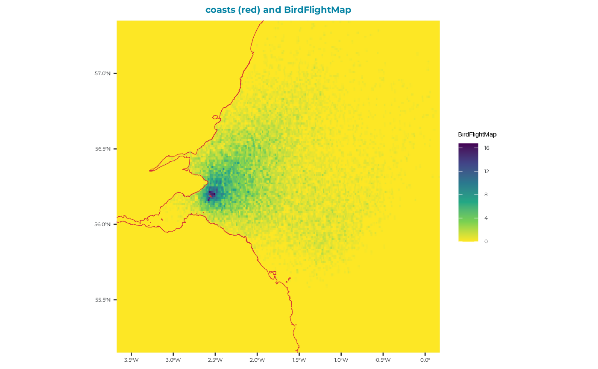
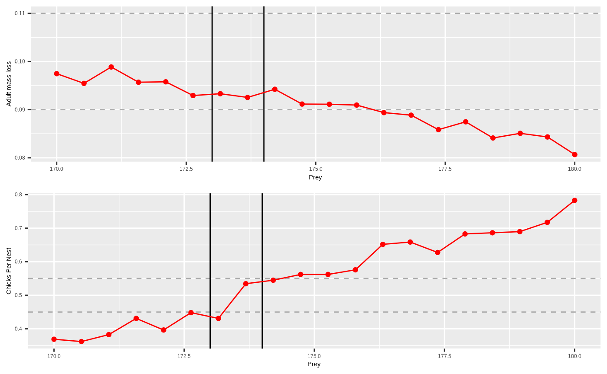

Example kittiwake: step 2.2 - seabORD calibration - GPS maps
E_exampleKI_calib.RmdLoad the seabORD package
# load seabORD and other required packages for plotting outputs
library(seabORD)
library(ggplot2)
library(gridExtra)
### UK outline
#use coastline
uk_map <- seabORD::cef_coast_4326
### theme definition
sysfonts::font_add_google("Montserrat", "montserrat") # Base and heading font
sysfonts::font_add_google("JetBrains Mono", "jetbrains_mono") # Code font
showtext::showtext_auto()
theme_bslib <- ggplot2::theme(
plot.background = ggplot2::element_rect(fill = "#fff", color = NA), # Background color
panel.background = ggplot2::element_rect(fill = "#EAEFEC", color = NA), # Panel background (secondary)
panel.grid.major = ggplot2::element_line(color = "#EAEFEC"), # Major grid lines
panel.grid.minor = ggplot2::element_line(color = "#EAEFEC"), # Minor grid lines
axis.text = ggplot2::element_text(color = "#292C2F", family = "montserrat"), # Axis text (foreground and font)
axis.title = ggplot2::element_text(color = "#292C2F", family = "montserrat"), # Axis titles
plot.title = ggplot2::element_text(color = "#0483A4", family = "montserrat", size = 16, face = "bold", hjust = 0.5), # Title
legend.background = ggplot2::element_rect(fill = "#fff", color = NA), # Legend background
legend.key = ggplot2::element_rect(fill = "#EAEFEC", color = NA), # Legend key
legend.text = ggplot2::element_text(color = "#292C2F", family = "montserrat"), # Legend text
plot.caption = ggplot2::element_text(color = "#292C2F", family = "jetbrains_mono"),
axis.title.x = ggplot2::element_blank(), # Remove x-axis label
axis.title.y = ggplot2::element_blank(),# Caption for code font
)Introduction & background
A key component of the seabORD model is the need to calibrate the prey level inputs used for each new species and colony combination. This currently involves re-running the model without ORDs (baseline simulations) with a range of prey levels to ascertain the range of values within which the model returns adult mass and chick mortality rates consistent with pre-defined values representing “moderate” conditions (Figure 1). This is to allow simulation of the range of outcomes expected under these conditions, as the model is highly sensitive to the prey density parameter.
![Figure 1: : Schematic plot of kittiwake adult mass loss (A) and chicks per nest (B) withdrawn from 300 baseline simulations (no ORD footprints) ranging from a prey value of 50 up to 250. The red lines are for smoothed model outputs, which are overlaid on grey points indicating the individual estimates. For calibration we have upper and lower bound for each output (A & B) which are picked to reflect “moderate” conditions, i.e., what is observed in a typical year for kittiwakes at the Isle of May, and these are indicates by the dashed grey horizontal lines. The grey shaded blocks indicate where the respective outputs fall within these bound, and the light blue shaded block indicates the prey values where there is overlap between the estimates, which is the prey range used in subsequent simulations with ORDs included.](images/Calibration_plot_schematic_extended_seabordpkg.png)
This example
In this example we will run 20 baseline runs (no wind farm footprints included) with a range of prey values and plot the outputs in attempt to capture “moderate” conditions for kittiwakes at the Isle of May.
Prepare inputs
The inputs for a calibration are largely the same as when running a full run except there are no ORDs included. We will first load in our parameter sets (Par, modPar, ordPar, switches), followed by the various spatial inputs used to set up the landscape and environment attributes.
Parameters sets
Par_example <- seabORD::example_lists_calibration$Par
str(Par_example) # view your list of main parameters - NOTE that $NScalefactor is set to 0.1 meaning we are running with 10% of the populaution, which may be sufficient for calibration runs.
#> List of 12
#> $ thisSpecies : chr "KI"
#> $ colonies : chr "UK9004171"
#> $ Nscalefactor : num 0.1
#> $ Prob_Displacement : num 0.6
#> $ Prob_Barrier : num 1
#> $ PreyType : chr "Uniform"
#> $ collision : chr "Off"
#> $ SiteSelectionMethod: chr "Map"
#> $ MaxDistancekm : num 0
#> $ PropInRange : num 0
#> $ Npairspercol : num 2898
#> $ Pmedian : num [1:20] 170 171 171 172 172 ...
# Create the ouput folder "output_seabORD_calibration" specifically for calibration outputs if it doesn't alreay exist
if (!dir.exists("output_seabORD_calibration")) {
dir.create("output_seabORD_calibration")
}
modPar_example <- seabORD::example_lists_calibration$modPar
str(modPar_example) # NOTE: here is where our 20 replicates are specified - this must align with the number of prey values listed in Par$Pmedian
#> List of 5
#> $ Nparallel : logi NA
#> $ initialseed: num 6598
#> $ reference : chr "serial_calibration_KI_UK9004171"
#> $ outputdir : chr "output_seabORD"
#> $ Nreplicates: num 20
# Lets run a test to that effect:
if (modPar_example$Nreplicates == length(Par_example$Pmedian)) {
print("Nreplicates and number of prey inputs match - you may proceed")
} else {
print("Nreplicates and number of prey inputs DO NOT match - you may proceed, but will likely fail...")
}
#> [1] "Nreplicates and number of prey inputs match - you may proceed"
modPar_example$outputdir #this does not align with the directory created above
#> [1] "output_seabORD"
# so let's change it:
modPar_example$outputdir <- "output_seabORD_calibration"
ordPar_example <- seabORD::example_lists_calibration$ordPar
str(ordPar_example) # Note that there is nothing within this list - and there doesn't need to be as we are only running baseline runs with no ORDs included.
#> list()
switches_example <- seabORD::example_lists_calibration$switches
switches_example$savebirdflightmap <- TRUE # turn this switch on if you want to see an example of the birdflightmap outputAssorted spatial inputs
Now load in all the spatial inputs. For more information please see the “Example kittiwake: step 1 - seabORD inputs” article.
example_data_seamask <- seabORD::seamask_3035_example
#make a raster with the right dimension/proj/extents etc.
seamask_example <-
raster::raster(
nrows = example_data_seamask$metadata[["n_rows"]],
ncols = example_data_seamask$metadata[["n_cols"]],
xmn = example_data_seamask$metadata[["x_min"]],
xmx = example_data_seamask$metadata[["x_max"]],
ymn = example_data_seamask$metadata[["y_min"]],
ymx = example_data_seamask$metadata[["y_max"]],
crs = example_data_seamask$metadata[["crs"]]
)
#fill it with the data available
seamask_example <- raster::setValues(seamask_example, #the raster
example_data_seamask$matrix) #the values
#Set the name of the layer
names(seamask_example) <- "seamask_3035"
spadat1_example <-
tibble::as_tibble( #as a tibble
dplyr::filter(seabORD::spacoordinates, #the full dataset
SITECODE == "UK9004171") #the iste of interest
)
spadat2_example <-
tibble::as_tibble( #as a tibble
dplyr::filter(seabORD::spalist, #the whole list
SITE_CODE == "UK9004171") #the site of interest
)
spdat_example <-
#tibble::as_tibble( #as a tibble
dplyr::filter(seabORD::energeticsandpreydata,
Code == "KI")
# )
example_data_brd <- seabORD::BrdData_example
#make the raster with the right dimensions..
BrdData_example <-
raster::raster(
nrows = example_data_brd$metadata[["n_rows"]],
ncols = example_data_brd$metadata[["n_cols"]],
xmn = example_data_brd$metadata[["x_min"]],
xmx = example_data_brd$metadata[["x_max"]],
ymn = example_data_brd$metadata[["y_min"]],
ymx = example_data_brd$metadata[["y_max"]],
crs = example_data_brd$metadata[["crs"]]
)
#fill it with the data
BrdData_example <- raster::setValues(BrdData_example,
example_data_brd$matrix)
#Set the name of the layer
names(BrdData_example) <- "Forth.Islands"
example_data_frg <- seabORD::frgcompdata_example
#make the raster with the right dimensions..
FrgCompData_example <-
raster::raster(
nrows = example_data_frg$metadata[["n_rows"]],
ncols = example_data_frg$metadata[["n_cols"]],
xmn = example_data_frg$metadata[["x_min"]],
xmx = example_data_frg$metadata[["x_max"]],
ymn = example_data_frg$metadata[["y_min"]],
ymx = example_data_frg$metadata[["y_max"]],
crs = example_data_frg$metadata[["crs"]]
)
#fill it with the data
FrgCompData_example <- raster::setValues(FrgCompData_example,
example_data_frg$matrix)
#Set the name of the layer
names(FrgCompData_example) <- "Forth.Islands"
UK9004171_bysea <- seabORD::UK9004171_bysea_3035
#make the raster with the right dimensions..
fltdist_base_example <-
raster::raster(
nrows = UK9004171_bysea$metadata[["n_rows"]],
ncols = UK9004171_bysea$metadata[["n_cols"]],
xmn = UK9004171_bysea$metadata[["x_min"]],
xmx = UK9004171_bysea$metadata[["x_max"]],
ymn = UK9004171_bysea$metadata[["y_min"]],
ymx = UK9004171_bysea$metadata[["y_max"]],
crs = UK9004171_bysea$metadata[["crs"]]
)
#fill it with the data
fltdist_base_example <- raster::setValues(fltdist_base_example,
UK9004171_bysea$matrix)
#as a raster brick. #WHY? only one layer
fltdist_base_example <- raster::brick(fltdist_base_example)
#Set the name of the layer
names(fltdist_base_example) <- "UK9004171"
FlightGridcorrection <- seabORD::FlightGridcorrection_3035
#ORDpoly_example <- seabORD::ORDpoly_example # commented out as not required for calibration runsSet off calibration runs
Now that the inputs have been prepared by loading them into our environment we can set off the run using the following code:
# SeabORDoutput <- seabord(Par = Par_example,
# ordPar = ordPar_example,
# modPar = modPar_example,
# switches = switches_example,
# seamask = seamask_example,
# spadat1 = spadat1_example,
# spadat2 = spadat2_example,
# spdat = spdat_example,
# BrdData = BrdData_example,
# FrgCompData = FrgCompData_example,
# fltdist_base = fltdist_base_example,
# FlightGridcorrection = FlightGridcorrection,
# ORDpoly = ORDpoly_example)
# Save SeabORDsummary:
# if (switches_example$saverds) {
# saveRDS(SeabORDoutput, file.path(modPar_example$outputdir, paste0("sb_out_", gsub("\\.", "_", make.names(paste0(modPar_example$reference,"_", Sys.Date()))),".rds")))
# }Plot the outputs and determine prey values
If the time constraints do not allow for running of a full set of calibration runs within the workshop here is a dataset from calibration runs under the same setting conducted prior to the workshop:.
For this particular example we define moderate conditions for kittiwakes on the Isle of May against the two following outputs:
| Output | Moderate value | Upper bound (+10%) | Lower bound (-10%) |
|---|---|---|---|
| Adult mass loss | 10% | 11% | 9% |
| Chicks per nest | 50% | 55% | 45% |
Where adult mass loss is the average percentage mass loss of adults over the duration of the chick-rearing season being simulated, and chicks per nest is the average number of chicks surviving per nest. The aim of calibration is to find the shared prey values contained within the upper and lower bounds between each output.
# load in the saved datastet "example_calibration_output" contained within the seabORD package:
sbordout <- seabORD::example_calibration_output
# str(sbordout) # view the extensive structure of the output
# View the birdfligthmap output which is saved to it:
BirdFlightMap <-
terra::rast(sbordout$BirdFlightMap) %>%
terra::project(terra::crs(uk_map))
BirdFlightMap_df <- as.data.frame(BirdFlightMap, xy = TRUE)
ggplot2::ggplot() +
ggplot2:: geom_raster(data = BirdFlightMap_df, ggplot2::aes(x = x, y = y, fill = layer)) +
# Add the reprojected UK boundary
ggplot2::geom_sf(data = uk_map, fill = NA, color = "#D63333", size = 1.5) +
# Customize the plot
theme_bslib + #palette theme
ggplot2::scale_fill_viridis_c(
na.value = "gray", # Set the color for NA (i.e., for 0 values)
name = "BirdFlightMap", direction = -1) +
ggplot2::labs(fill = "BirdFlightMap locations",
title = "coasts (red) and BirdFlightMap")+
# Crop the map to the Firth of Forth and a bit of the North Sea
ggplot2::coord_sf(
xlim = c(-3.5, 0), # Longitude range (adjust as needed)
ylim = c(55.25, 57.25) # Latitude range (adjust as needed)
)
You can see from this map that there is no evidence of and ORD interactions, which is reassuring!
Now we will plot the adult outputs (sbordout$output_a0) and the chick outputs (sbordout$output_c0) against the range of prey values across replicates to obtain our calibrated estimates to be used in the scenario runs going forward.
# create a new column for percentage adult mass loss in "output_a0$data" which is the data output for adults in the simulation
sbordout$output_a0$data <- sbordout$output_a0$data %>%
mutate(percentage_loss = ((BM_adult_t0.mn - BM_adult.mn)/BM_adult_t0.mn))
# create our bounds for moderate conditions to be plotted.
massupper <- 0.11
masslower <- 0.09
produpper <- 0.55
prodlower <- 0.45
# vertical ablines (please feel free to edit) which you can use as a visual guide to ascertain where the moderate conditions overlap between outputs
lo <- 173
hi <- 174
pAd <- ggplot2::ggplot() +
#geom_hline(yintercept = 0.1, lty=2) +
geom_hline(yintercept = massupper, lty=2, colour="darkgrey") +
geom_hline(yintercept = masslower, lty=2, colour="darkgrey") +
geom_vline(xintercept = hi, lty=1, colour="black") +
geom_vline(xintercept = lo, lty=1, colour="black") +
geom_point(dat = sbordout$output_a0$data,aes(x=Prey, y = percentage_loss) , colour="red") +
geom_line(dat = sbordout$output_a0$data,aes(x=Prey, y = percentage_loss), colour="red") +
#geom_smooth(dat = sbordout$output_a0$data,aes(x=Prey, y = percentage_loss), colour="orange",method = "loess") +
labs(y = "Adult mass loss")
pCh <- ggplot2::ggplot() +
#geom_hline(yintercept = 0.5, lty= 2) +
geom_hline(yintercept = produpper, lty= 2, colour="darkgrey") +
geom_hline(yintercept = prodlower, lty= 2, colour="darkgrey") +
geom_vline(xintercept = hi, lty=1, colour="black") +
geom_vline(xintercept = lo, lty=1, colour="black") +
geom_point(dat = sbordout$output_c0$data, aes(x=Prey, y = ChicksPerNest), colour="red") +
geom_line(dat = sbordout$output_c0$data, aes(x=Prey, y = ChicksPerNest), colour="red") +
#geom_smooth(dat = sbordout$output_c0$data, aes(x=Prey, y = ChicksPerNest), colour="orange",method = "loess") +
labs(y = "Chicks Per Nest")
pBoth <- gridExtra::grid.arrange(pAd, pCh, ncol=1)